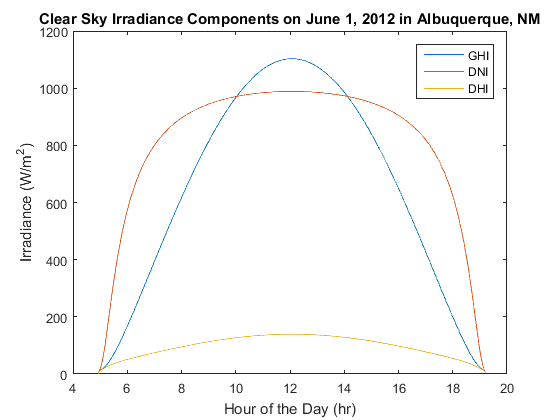

pvl_clearsky_ineichen
Determine clear sky GHI, DNI, and DHI from Ineichen/Perez model.
Contents
Syntax
[ClearSkyGHI, ClearSkyDNI, ClearSkyDHI]= pvl_clearsky_ineichen(Time, Location) [ClearSkyGHI, ClearSkyDNI, ClearSkyDHI]= pvl_clearsky_ineichen(Time, Location, LinkeTurbidityInput)
Description
Implements the Ineichen and Perez clear sky model for global horizontal irradiance (GHI), direct normal irradiance (DNI), and calculates the clear-sky diffuse horizontal (DHI) component as the difference between GHI and DNI*cos(zenith) as presented in [1, 2]. A report on clear sky models found the Ineichen/Perez model to have excellent performance with a minimal input data set [3]. Default values for Linke turbidity provided by SoDa [4, 5].
Inputs
Time is a struct with the following elements, which can be column vectors all of the same length.
- Time.year = The year in the gregorian calendar.
- Time.month = the month of the year (January = 1 to December = 12).
- Time.day = the day of the month.
- Time.hour = the hour of the day.
- Time.minute = the minute of the hour.
- Time.second = the second of the minute.
- Time.UTCOffset = the UTC offset code, using the convention that a positive UTC offset is for time zones east of the prime meridian (e.g. EST = -5).
Location is a struct with the following elements, which can be column vectors all of the same length.
- Location.latitude = vector or scalar latitude in decimal degrees (positive is northern hemisphere).
- Location.longitude = vector or scalar longitude in decimal degrees (positive is east of prime meridian).
- Location.altitude = an optional component of the Location struct, used to calculate atmospheric pressure (see pvl_alt2pres).
LinkeTurbidityInput - An optional input to provide your own Linke turbidity. If this input is omitted, the default Linke turbidity maps will be used. LinkeTurbidityInput may be a scalar or a column vector of Linke turbidities of the same length as the time and location elements.
Outputs
- ClearSkyGHI - the modeled global horizonal irradiance in W/m^2 provided by the Ineichen clear-sky model.
- ClearSkyDNI - the modeled direct normal irradiance in W/m^2 provided by the Ineichen clear-sky model.
- ClearSkyDHI - the calculated diffuse horizonal irradiance in W/m^2 provided by the Ineichen clear-sky model.
Notes
This implementation of the Ineichen model requires a number of other PV_LIB functions including pvl_ephemeris, pvl_date2doy, pvl_extraradiation, pvl_absoluteairmass, pvl_relativeairmass, and pvl_alt2pres. It also requires the file \Required Data\LinkeTurbidities.mat. When using pvl_ineichen inside a loop, it is faster to load LinkeTurbidities.mat outside of the loop and provide LinkeTurbidityInput as an input, rather than having pvl_ineichen load LinkeTurbidities.mat each time it is called.
Initial implementation of this algorithm by Matthew Reno (Sandia and Georgia Tech).
Example
Location.latitude = 35.04; Location.longitude = -106.62; Location.altitude = 1619; % Create 1-min time series for Jan 1, 2012 DN = datenum(2012, 6,1):1/(24*60):datenum(2012, 6, 1, 23, 59, 59); Time = pvl_maketimestruct(DN, -7); [ClearSkyGHI, ClearSkyDNI, ClearSkyDHI]= pvl_clearsky_ineichen(Time, Location); dHr = Time.hour+Time.minute./60+Time.second./3600; % Calculate decimal hours for plotting figure plot(dHr,ClearSkyGHI) hold all plot(dHr,ClearSkyDNI) plot(dHr,ClearSkyDHI) title('Clear Sky Irradiance Components on June 1, 2012 in Albuquerque, NM') xlabel('Hour of the Day (hr)') ylabel('Irradiance (W/m^2)') legend('GHI','DNI','DHI')
References
- [1] P. Ineichen and R. Perez, "A New airmass independent formulation for the Linke turbidity coefficient", Solar Energy, vol 73, pp. 151-157, 2002.
- [2] R. Perez et. al., "A New Operational Model for Satellite-Derived Irradiances: Description and Validation", Solar Energy, vol 73, pp. 307-317, 2002.
- [3] M. Reno, C. Hansen, and J. Stein, "Global Horizontal Irradiance Clear Sky Models: Implementation and Analysis", Sandia National Laboratories, SAND2012-2389, 2012.
- [4] http://www.soda-is.com/eng/services/climat_free_eng.php#c5 (obtained July 17, 2012).
- [5] J. Remund, et. al., "Worldwide Linke Turbidity Information", Proc. ISES Solar World Congress, June 2003. Goteborg, Sweden.
See Also
pvl_maketimestruc , pvl_makelocationstruc, pvl_ephemeris, clearsky_haurwitz
Copyright 2014 Sandia National Laboratories